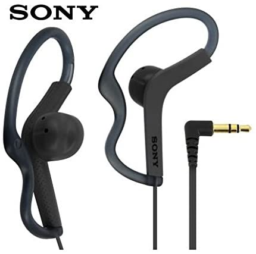
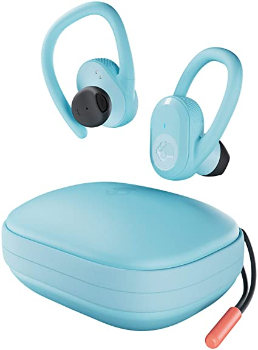
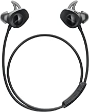

| products |
Name |
detail |
prise |
|

|
Sony
|
Get a secure fit when running 13.5 mm driver when you're feeling the strain in those final workout minutes, pure, energised sound keeps you going until the very end
Hear every detail crisp and clear - with 104 dB/mW sensitivity and a frequency range of 17-22,000 Hz, turn up the volume and hear pure detail
Ready for rain, sweat or spray splash proof headphones will keep on playing throughout your training |
₹1879 |
|

|
Skullcandy Push Ultra True Wireless In-Ear Earbud - Bleached Blue |
41 Hours Total Battery + Rapid Charge
Wireless Charging Case
Moldable Hooks + Stay-Aware Buds
IP67 Sweat and Waterproof
Built-In Tile Technology |
₹6014 |

|
apple earphone |
Unlike traditional, circular earbuds, the design of the EarPods is defined by the geometry of the ear which makes them more comfortable for more people than any other earbud-style headphones
The EarPods with lightning connector also include a built-in remote that lets you adjust the volume, control the playback of music and video, and answer or end calls with a pinch of the cord |
₹1737 |
|

|
Bose SoundSport Wireless, Sweat Resistant, In-Ear Headphones, Black |
A high quality audio experience, consistently balanced at any volume, thanks to Bose active EQ. Connectivity technology: Wireless
Wireless convenience, with easy Bluetooth and NFC pairing aided by voice prompts
Exclusive stay hear and tips keep the headphones comfortably in place during workouts
Up to 6 hours battery life per charge. Please refer the user guide before use |
₹9,699 |